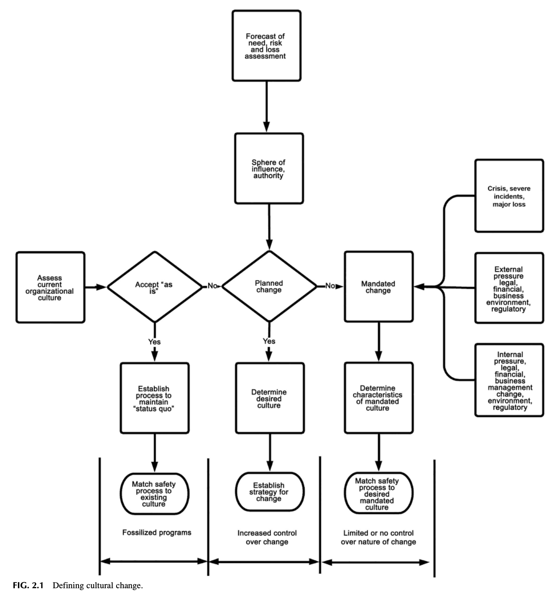
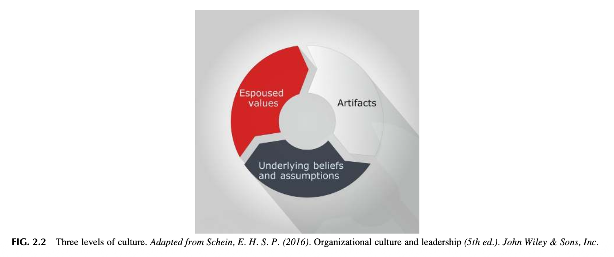
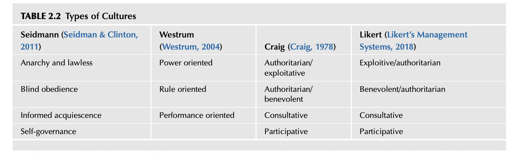
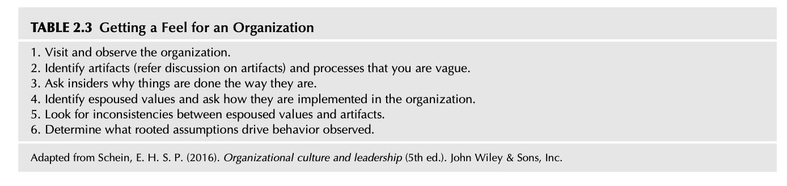

Chapter 2 Analyzing the Organizational Culture
📌 1. INTRODUCTION (도입)
조직의 문화를 깊이 있게 이해하는 것은 효과적인 안전경영시스템(Safety Management System)을 개발하고 안착시키기 위한 필수적 전제조건입니다. 문화는 조직이 외부 환경에 적응하고 내부 통합을 달성하기 위해 발전시켜 온 암묵적 규범이자 신념 체계이므로, 안전 전문가는 문화적 맥락을 정확히 읽어내야만 실효성 있는 변화를 이끌어낼 수 있습니다.
📊 1.1 제2장의 6대 핵심 학습 목표
본 장을 학습한 후 연구자 및 안전 전문가는 다음 6가지 핵심 과제를 논의하고 분석할 수 있어야 합니다:
- 조직문화의 구성 요소(Elements of Organizational Culture)를 식별할 수 있다.
- 에드가 샤인(Edgar Schein)의 조직문화 3단계(Three Levels of Culture)를 식별하고 상호작용을 논의할 수 있다.
- 안전문화의 본질적 요소와 다차원적 속성을 정의하고 설명할 수 있다.
- 조직의 가능한 문화적 유형과 특성을 진단할 수 있다.
- 문화 변혁(Culture Change)을 달성하기 위한 체계적인 접근 방법을 도출할 수 있다.
- 안전 통제를 무너뜨리는 9대 치명적 경고 깃발(Nine Red Flags)을 식별하고 예방할 수 있다.
---
🏛️ 2. WHAT IS ORGANIZATIONAL CULTURE? (조직문화란 무엇인가?)
조직문화는 단순히 벽에 걸린 사훈이나 슬로건이 아니며, "이곳에서 일이 실제로 어떻게 처리되는가(The way we do things around here)"를 규정하는 보이지 않는 규칙과 신념의 집합체입니다.
- 기저 문화의 지배력:
조직문화는 사물이 어떻게 작동하는지에 대한 기본 가정(Basic Assumptions), 구성원들이 공유하는 신념, 가치관, 그리고 일상적인 행동 규칙으로 정의됩니다.
- 표면적 시스템과 문화의 충돌:
문화적 기반이 취약한 상태에서 정교한 절차서나 규정만을 도입하면 현장의 냉소주의와 저항에 부딪힙니다. 안전 프로세스는 조직의 고유한 문화적 토양에 뿌리를 내려야만 지속 가능성을 확보할 수 있습니다.
---
📊 [표 2.1 상세 분석] 조직문화의 핵심 구성 요소 (Components of Organizational Culture)

**[표 2.1 상세 보충설명: 조직문화를 형성하는 4대 기본 지주]**
* **1. 기본 가정 (Basic Assumptions)**: 사물이 어떻게 작동하고 세상이 어떻게 돌아가는지에 대한 의심할 여지 없는 무의식적 믿음.
* **2. 공유된 가치 (Shared Values)**: 조직 내에서 무엇이 옳고 그른지, 무엇이 더 중요하고 가치 있는지를 판단하는 집단적 도덕·규범적 기준.
* **3. 불문율과 규범 (Unspoken Rules & Norms)**: 명문화되어 있지는 않으나 구성원들이 암묵적으로 지키고 따르는 일상적 행동 규칙.
* **4. 행동 양식 (Behavioral Patterns)**: 매일 반복되는 업무 수행 습관, 소통 방식, 갈등 해결 태도 등의 가시적 패턴.
---
📜 3. RECENT HISTORY (안전문화의 역사적 배경과 대형 참사의 교훈)
현대 안전 관리 역사에서 대형 참사는 단순한 기계적 결함이나 작업자의 일회성 실수로 발생하지 않고, 조직 내부의 문화적 결함과 결합하여 발생한다는 사실이 입증되었습니다.
- 1977년 테네리페 공항 참사 (Tenerife Airport Disaster):
항공 역사상 최악의 참사(583명 사망)로 기록된 이 사고는 짙은 안개 속에서 기장의 권위주의적 위계 문화(권력 거리)와 부기장의 침묵, 관제탑과의 소통 오해가 결합하여 발생했습니다. 이는 조종실 자원 관리(CRM)와 안전문화 개념 도입의 직접적 도화선이 되었습니다.
- 1986년 체르노빌 원전 사고 (Chernobyl Accident):
국제원자력기구(IAEA/INSAG, 1986)는 사고 조사 보고서에서 '안전문화(Safety Culture)'라는 용어를 공식적으로 최초 사용하며, 안전을 경시하는 소련 특유의 관료주의적 멘탈 모델과 상명하복식 조직 분위기가 파국의 근본 원인임을 밝혔습니다.
- 역사적 교훈과 통념의 함정:
"사고가 없으면 안전하다"는 사후적 착각은 조직을 극도로 취약하게 만듭니다:
*"만약 안전을 단지 '사고가 없는 상태'로만 정의한다면, 직원들은 '사고가 나지 않거나 다치지 않는 한 내가 하는 모든 행동은 안전하다'는 치명적인 오만에 빠지게 된다. 이 순간 리스크는 간과되고, 자만심(Complacency)이 뿌리내리며, 조직은 뜻밖의 파국 앞에서 경악하게 된다."*
— **갤러웨이 (Galloway, 2012)**
---
🔺 4. THREE LEVELS OF CULTURE DEFINED (에드가 샤인의 3단계 문화 모델)
조직문화의 대가 에드가 샤인(Edgar Schein, 2016)은 문화를 표면의 깊이에 따라 3단계로 분류하여 안전문화의 본질을 분석할 수 있는 결정적 틀을 제공했습니다.
---
🖼️ [그림 2.1 상세 분석] 문화 변혁의 정의와 전개도

**[그림 2.1 상세 보충설명: 문화적 변화의 동역학]**
* 가시적인 물리적 환경과 행동의 변화가 점진적으로 내면화되어 가치관과 기본 가정을 변화시키는 선순환 과정을 시각화합니다.
---
📌 4.1 제1단계: 인공물 (Artifacts)
- 개념: 보고 만지고 들을 수 있는 조직의 가시적인 물리적 환경, 절차, 언어, 복장 등 표면적 구조물.
- 현장 사례: 작업장의 5S 정리정돈 상태, 보호구 착용 실태, 표지판, 안전 작업 표준서, 사무실 자리 배치.
- 한계: 눈으로 쉽게 관찰할 수 있지만, 구성원들이 "왜 그렇게 행동하는가"에 대한 심층적 의미를 파악하기는 어렵습니다.
---
🔍 [Observation 1] 대형 표지판과 안전 메시지의 모순
- 상황: 나단(Nathan)이 리스크 통제 기초 교육을 위해 고객사를 방문했을 때, 교육장 출구에 "위험을 감수하라(Take the risk!)"는 거대한 경영 슬로건 디스플레이가 걸려 있는 모순을 목격함.
- 시사점: 비즈니스적 모험(Risk-taking)과 작업장 안전 리스크(Safety risk)의 용어가 혼용되어 현장 직원들에게 혼란스럽고 상충되는 신호를 전달하고 있음을 보여줍니다.
---
📌 4.2 제2단계: 신봉 가치 (Espoused Values)
- 개념: 조직이 대외적으로 공표하고 표방하는 공식적인 전략, 철학, 목표, 행동 규범.
- 현장 사례: "안전은 우리의 제1 가치다", 안전 방침 선언문, 무재해 달성 구호.
- 위험성: 신봉 가치는 조직이 지향하는 이상일 뿐, 실제 현장의 일상적 행동 규범과 심각하게 괴리될 수 있습니다.
---
📌 4.3 제3단계: 기본 가정과 불문율 (Underlying Assumptions and Unspoken Rules)
- 개념: 구성원들이 너무나 당연하게 여겨 의문조차 품지 않는 무의식적이고 암묵적인 믿음과 지각.
- 현장 사례: "바쁠 때는 안전 수칙을 건너뛰어야 일 잘하는 사람이다", "사고를 보고하면 징계를 받는다".
- 핵심 본질: 조직문화의 진짜 실체는 1단계 인공물이나 2단계 신봉 가치가 아니라, 바로 이 3단계 무의식적 기본 가정입니다 (Schein, 2016).
---
🖼️ [그림 2.2 상세 분석] 에드가 샤인의 3단계 문화 모델

**[그림 2.2 상세 보충설명: 빙산 모델과 문화의 3차원 깊이]**
* **수면 위**: **Artifacts (인공물)** — 눈에 보이는 가시적 현상 (해석 난해).
* **수면 경계**: **Espoused Values (신봉 가치)** — 공식 표명된 가치관 및 목표.
* **수면 아래**: **Underlying Assumptions (기본 가정)** — 무의식적이고 당연시되는 궁극적 신념의 원천.
---
🔍 [Observation 2] 표방된 가치와 현장 불문율의 괴리
- 모든 저자들은 기업이 입으로는 "안전이 최우선"이라고 말하면서도, 현장 관찰(인공물)을 통해 드러나는 실제 행동은 "생산 속도가 진정한 불문율"로 작동하는 거대한 간극을 지속적으로 목격했습니다.
---
🛡️ 5. SAFETY CULTURE DEFINED (안전문화의 정의와 복합적 속성)
안전문화는 독립된 단일 프로그램이 아니라, 전체 조직문화가 '안전'이라는 렌즈를 통해 투영된 하위 문화입니다.
- ACSNI(1993)의 고전적 정의:
"조직의 안전문화는 조직의 건강 및 안전 관리 프로그램에 대한 헌신, 역량 및 숙달을 결정하는 개인과 집단의 가치관, 태도, 지각, 역량, 행동 패턴의 산물이다."
- 상대적 리스크와 복합성:
안전문화는 고정된 상태가 아니며, 외부 경영 환경, 기술 변화, 리더십 교체 등과 맞물려 끊임없이 흔들리는 동적 평형 상태를 유지합니다.
---
🔍 [Observation 3 & 4] 안전을 단순 규칙 준수로 보는 착각
- "규칙을 철저히 지키면 안전이 달성된다"는 단순 논리는 돌발 상황에 대응할 수 없습니다. 규칙을 기계적으로 따르는 수동적 태도를 넘어, 현장의 위험을 주도적으로 식별하고 통제하는 능동적 숙달(Mastery)이 안전문화의 본질입니다.
---
🔍 6. ASSESSING THE CURRENT SAFETY CULTURE (현재 안전문화의 진단과 평가)
조직의 안전문화를 개선하기 위한 출발점은 현재의 성숙도와 취약점을 객관적으로 진단하는 것입니다.
- 다각화 진단 기법 (Triangulation):
단순 설문조사에만 의존하지 않고, 심층 인터뷰, 비공식 현장 관찰, 과거 사고 데이터 분석을 결합하여 복합적으로 평가해야 합니다.
- 진단 시 유의사항:
설문조사 시 직원들이 불이익을 두려워하여 '경영진이 듣고 싶어 하는 답'을 적어내는 편향을 극복해야 합니다.
---
🔍 [Observation 5 & 6] 현장 진단에서의 저항과 통찰
- 익명성이 철저히 보장되고 비처벌 원칙이 확인될 때에만 현장 작업자들은 "라인을 멈출 수 없는 실질적 압박" 등 숨겨진 문화적 진실을 토로합니다.
---
🔄 7. HABITS AS PART OF THE CULTURE (문화의 구성 요소로서의 습관)
문화는 거창한 철학이기 이전에 매일 무의식적으로 반복되는 일상적 습관(Daily Habits)의 집적체입니다 (Duhigg, 2012).
- 핵심 습관 (Keystone Habits):
사소해 보이는 하나의 안전 습관(예: 작업 전 1분 위험 확인, 올바른 장갑 착용)이 정착되면, 이는 연쇄 반응을 일으켜 조직 전체의 작업 규율과 안전 분위기를 혁신합니다.
---
📊 8. POSSIBLE CHARACTERISTICS OF A CULTURE (안전문화를 구성하는 5대 핵심 특성)
제임스 리즌(James Reason, 1997)이 제시한 고신뢰조직(HRO)의 안전문화 5대 핵심 지표:
- 정보 문화 (Informed Culture): 조직 전체가 유해위험요인과 사고 위험에 대한 최신 지식을 지속적으로 수집하고 큐레이션하는 문화.
- 보고 문화 (Reporting Culture): 아차사고와 경미한 실수를 처벌에 대한 두려움 없이 즉각 자발적으로 보고하는 문화.
- 공정 문화 (Just Culture): 성실한 인간의 오류와 고의적이고 무모한 규정 위반을 명확히 구분하여 신뢰를 형성하는 문화.
- 유연 문화 (Flexible Culture): 위기나 비상 상황 발생 시 위계적 계급을 떠나 현장 전문성을 가진 실무자에게 권한이 위임되는 문화.
- 학습 문화 (Learning Culture): 사고 보고서로부터 올바른 결론을 도출하고, 시스템을 근본적으로 개편하여 동일 재해를 방지하는 문화.
---
🔍 [Lesson Learned 1 & 2 & Observation 7] 형식주의와 수동적 순응의 함정
- 사고 건수가 '0'이라는 숫자에만 집착하는 조직은 사소한 부상을 보고하지 못하게 은폐를 유도하며, 이는 훗날 대형 참사로 이어집니다.
---
🗣️ 9. COMMUNICATION (소통과 심리적 안전감)
소통은 안전문화의 혈액과 같습니다. 일방적인 상명하복식 훈화는 소통이 아닙니다.
- 양방향 소통 (Two-Way Communication):
관리자가 말하기보다 현장의 목소리를 경청(Active Listening)하고, 위험을 제기한 작업자에게 처리 결과를 반드시 피드백해야 합니다.
---
🔍 [Observation 8] 비공식 소통 채널의 위력
- 공식 게시판보다 휴게실 커피 타임이나 교대 시간의 짧은 대화 속에서 오고 가는 안전 이야기가 직원들의 지각을 형성하는 데 훨씬 강력한 영향을 미칩니다.
---
🧱 10. SILO MANAGEMENT (사일로 경영의 폐해와 극복)
각 부서가 곡물 창고(Silo)처럼 담장을 쌓고 자기 부서의 이익과 성과에만 매몰되는 사일로 경영(Silo Management)은 전사적 안전을 파괴하는 주범입니다.
---
🖼️ [그림 2.3 & 2.4 상세 분석] 사일로 경영과 버블 경영


**[그림 2.3 및 2.4 상세 보충설명: 부서 간 장벽과 정보의 고립]**
* **Fig 2.3 Silo Management**: 생산, 공무, 품질, 안전 부서가 각각 독립된 수직 기둥 안에 갇혀 수평적 소통이 전면 차단된 상태.
* **Fig 2.4 Bubble Management**: 각 관리자가 자신의 거품(Bubble) 속에 갇혀 외부 위험과 부서 간 연동성을 보지 못하는 현상.
* **결과**: 생산 부서가 일정을 맞추기 위해 임의로 안전장치를 해제해도 유지보수팀이나 안전팀은 사고가 터질 때까지 전혀 알지 못합니다.
---
🔍 [Observation 9] 부서 간 장벽이 부른 충돌
- 생산 일정을 맞추려는 생산 반장과 설비 정기 점검을 요구하는 안전/공무 부서 간의 만성적 갈등은 전형적인 사일로 구조에서 기인합니다.
---
🌍 11. NATIONAL AND OCCUPATIONAL CULTURES (국가 문화 및 직종 문화의 영향)
조직문화는 그 사회의 거시적 국가 문화 및 엔지니어, 생산직, 관리직 등 직종별 하위 문화와 얽혀 있습니다.
- 홉스테드(Hofstede)의 문화 차원 이론:
권력 거리(Power Distance)가 높은 문화권에서는 하급자가 상급자의 안전 위반 행동을 지적하거나 작업을 중지시키기 매우 어렵습니다.
- 직종별 관점 차이:
기술적 완벽성을 중시하는 엔지니어와 생산 속도를 중시하는 현장 조장 간의 직종 문화 차이를 조율해야 합니다.
---
🎯 12. SAFETY CULTURE AS MISSION-ESSENTIAL BUSINESS PRIORITY (미션 필수적 비즈니스 최우선 순위로서의 안전문화)
안전은 기업의 부수적인 복지나 비용이 아니라, 기업의 생존을 담보하는 '미션 필수적 우선순위(Mission-Essential Priority)'입니다.
- 사업 수행 면허 (License to Operate):
중대재해가 발생하면 천문학적 과징금과 법적 처벌뿐만 아니라, 고객사 이탈과 지역사회의 규제로 인해 기업의 존립 기반이 흔들립니다.
---
🌱 13. CAN A CULTURE BE CHANGED? (문화는 과연 변화될 수 있는가?)
문화는 하루아침에 바뀌지 않지만, 전략적이고 일관된 개입을 통해 확실하게 변화시킬 수 있습니다.
---
🖼️ [그림 2.5 상세 분석] 문화와 비전의 상호작용 매트릭스

**[그림 2.5 상세 보충설명: 리더십 비전과 문화적 수용성의 관계]**
* 강력한 리더십 비전과 현장 문화가 정렬될 때 안전문화 혁신이 폭발적인 성과를 거둡니다.
- 커트 레빈(Kurt Lewin)의 변화 3단계 모델:
- 해빙 (Unfreezing): 과거의 잘못된 안전 관행과 멘탈 모델의 위험성을 체감하고 변화의 당위성에 합의.
- 변화 (Changing): 새로운 안전 작업 표준, 투명한 보고 시스템, 참여형 리더십 행동 도입.
- 재동결 (Refreezing): 새로운 안전 규범을 인사 고과, 포상, 일상적 습관으로 제도화하여 정착.
---
📐 14. CONDUCTING A BASIC GAP ANALYSIS (기본 갭 분석 수행법)
조직의 안전문화 수준을 To-Be(목표)와 As-Is(현재)로 비교하여 구체적 실행 로드맵을 도출하는 기법입니다.
---
🖼️ [그림 2.6 및 표 2.2 상세 분석] 안전문화 갭 분석 매트릭스


| 갭 분석 평가 영역 | 현재 운영 상태 (Current As-Is) | 바람직한 목표 상태 (Desired To-Be) | 구체적 극복 과제 (Action Plan) |
|---|---|---|---|
| 경영진의 현장 참여 | 연 1회 형식적 공장 순시 | 주 1회 현장 작업자와의 안전 대화(MBWA) | 경영진 안전 코칭 프로그램 운영 |
| 위험성평가 참여도 | 안전 부서 전담의 서류 작업 | 현장 작업자가 참여하는 일상 위험성평가 | 전 작업자 대상 JHA 실습 교육 |
| 아차사고 피드백 | 보고 접수 후 처리 결과 미공유 | 72시간 이내 현장 조치 및 결과 공지 | 모바일 안전 앱 기반 실시간 피드백망 구축 |
---
🚩 15. NINE WARNING FLAGS FACTORS THAT DEFEAT CONTROL (안전 통제를 무너뜨리는 9대 치명적 경고 깃발)
대형 사고가 발생하기 전 조직 내에 반드시 펄럭이는 9가지 적신호(Nine Red Flags):
- 과도한 생산 압박 (Production Pressure): 납기와 일정을 맞추기 위해 안전 절차 무시를 묵인하는 분위기.
- 만성적 자원 결핍 (Chronic Under-Resourcing): 설비 유지보수 및 안전 교육 예산을 가장 먼저 삭감하는 행태.
- 자만심과 안주 (Complacency): "지금까지 수년간 사고 없었으니 우리 공장은 안전하다"는 치명적 착각.
- 사일로 장벽과 소통 단절: 부서 간 위험 정보를 차단하고 책임을 전가하는 행태.
- 규정 위반의 일상화 (Normalization of Deviance): 작업 편의를 위한 지름길(Shortcut)이 관행으로 고착화됨.
- 침묵과 두려움의 분위기: 부당한 지시나 위험을 지적하면 인사상 불이익을 받을까 침묵하는 풍조.
- 비현실적 무재해 목표: 사고 보고를 억누르고 경미한 재해를 은폐하게 만드는 징벌적 목표 관리.
- 표면적이고 부실한 사고 조사: 근본적 시스템 원인을 보지 않고 작업자 부주의로만 서둘러 종결하는 태도.
- 리더십의 솔선수범 부재: 경영진과 관리자가 현장 보호구 착용 등 기본 규칙을 솔선수범하지 않는 행태.
---
📝 16. SUMMARY (요약 및 핵심 결론)
- 조직문화는 가시적인 인공물(Artifacts)이나 구호(Espoused Values)가 아니라, 무의식적으로 당연시되는 3단계 기본 가정(Underlying Assumptions)에 의해 결정됩니다.
- 안전문화는 전체 조직문화와 불가분의 관계이며, "사고가 없다는 것"이 곧 "안전하다는 증거"가 아님을 명심해야 합니다.
- 부서 이기주의인 사일로 경영을 타파하고, 비공식 네트워크와 양방향 소통을 통해 전사적 위험을 상시 공유해야 합니다.
- 9대 경고 깃발(Red Flags)을 선제적으로 감지하고, 갭 분석을 통해 지속적으로 안전경영시스템을 진화시켜야 합니다.
---
❓ 17. CHAPTER REVIEW QUESTIONS (복습 문제 10문항 정밀 분석)
- 조직문화의 정의와 중요성: 조직문화가 안전 프로세스 성공에 결정적 영향을 미치는 학술적 이유는 무엇인가?
- 에드가 샤인의 문화 3단계 분석: 인공물, 신봉 가치, 기본 가정의 상관관계와 현장 적용 시 주의점은?
- 체르노빌 참사의 교훈: 체르노빌 사고 조사를 통해 정립된 '안전문화' 개념의 핵심은 무엇인가?
- 무손실 무재해 통념의 오류: "사고가 없는 상태가 곧 안전이다"라는 인식이 초래하는 파국적 위험은?
- 사일로 경영(Silo Management)의 폐해: 생산 부서와 안전 부서 간의 장벽이 위험 통제를 어떻게 무력화하는가?
- 5대 안전문화 특성: 정보, 보고, 공정, 유연, 학습 문화가 상호 연계되는 메커니즘은?
- 국가 및 직종 문화의 영향: 권력 거리와 직종별 관점이 현장 안전 소통에 미치는 영향은?
- 안전문화 갭 분석(Gap Analysis): As-Is와 To-Be를 설정하고 실행 계획을 수립하는 절차는?
- 9대 경고 깃발(Nine Red Flags): 조직 내 자만심(Complacency)과 규정 위반의 일상화를 감지하는 방법은?
- 문화 변혁의 3단계: 해빙, 변화, 재동결 과정을 안전 프로세스에 적용하는 구체적 방안은?
---
📁 18. [APPENDIX 2.1] SAFETY CULTURE TRAITS AND INDICATORS (안전문화 특성 및 지표)
미국 원자력규제위원회(NRC) 및 선진 고신뢰 산업에서 규정한 9대 안전문화 핵심 특성:
- 리더십 안전 가치 및 행동 (Leadership Safety Values and Actions)
- 문제 식별 및 해결 역량 (Problem Identification and Resolution)
- 지속적 학습 환경 (Continuous Learning)
- 안전 최우선 의사결정 (Safety-Over-Production Decision Making)
- 존중과 신뢰의 작업 환경 (Respectful Work Environment)
---
📋 19. [APPENDIX 2.2] DO YOU KNOW YOUR SAFETY CULTURE: A BASIC CHECKLIST (안전문화 기초 진단 체크리스트)
현업 관리자가 즉시 활용할 수 있는 15대 자가 진단 질문:
- 최고경영진은 안전을 위해 생산 라인을 멈출 수 있는 실질적 권한을 현장에 부여하는가?
- 현장 직원이 아차사고를 보고했을 때 칭찬과 감사를 받는 분위기인가?
- 안전 회의에서 실질적인 유해위험요인 해결 방안이 논의되는가, 아니면 형식적 서류 확인에 그치는가?
---
🚀 20. [APPENDIX 2.3] NASA CULTURE AS AN ORGANIZATIONAL FLAW (NASA 챌린저 및 컬럼비아호 참사 분석)
다이앤 본(Diane Vaughan, 1996) 교수가 정립한 '비정상의 정상화(Normalization of Deviance)'의 대표적 비극:
- 발생 원인: 발사 일정 준수와 예산 삭감이라는 거대한 압박 속에서 O-링 손상 및 단열재 파편 탈락이라는 위험 징후를 "과거 발사에서도 별문제 없었다"며 수용 가능한 위험으로 자기합리화함.
- 학술적 시사점: 기술적 결함의 배후에는 문제를 제기하는 엔지니어의 경고를 묵살하고 일정을 우선시한 NASA의 관료적 조직문화 결함이 도사리고 있었음을 명백히 입증함.
---
📚 21. BIBLIOGRAPHY (참고 문헌)
- ACSNI. (1993). Organising for Safety: Third Report of the Advisory Committee on the Safety of Nuclear Installations. HSE Books.
- Duhigg, C. (2012). The Power of Habit: Why We Do What We Do in Life and Business. Random House.
- Galloway, S. M. (2012). Culture: The Unspoken Truth. Professional Safety, 57(1), 22-26.
- Gladwell, M. (2008). Outliers: The Story of Success. Little, Brown and Company.
- Hofstede, G. (2011). Dimensionalizing Cultures: The Hofstede Model in Context. Online Readings in Psychology and Culture.
- IAEA. (1986). Summary Report on the Post-Accident Review Meeting on the Chernobyl Accident. INSAG Series No. 1.
- Reason, J. (1997). Managing the Risks of Organizational Accidents. Ashgate Publishing.
- Schein, E. H. (2016). Organizational Culture and Leadership (5th ed.). John Wiley & Sons.
- Vaughan, D. (1996). The Challenger Launch Decision: Risky Technology, Culture, and Deviance at NASA. University of Chicago Press.